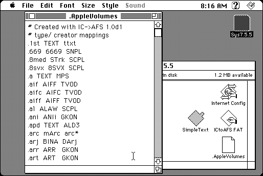

Download
ictoafs-10d2.zip (82K) ICtoAFS 1.0d2 repackaged into a zipped hfs disk image and checksum file. The disk image can be mounted with Mini vMac.
ictoafs-10d2.sit (78K) ICtoAFS 1.0d2 in the original format.
copyright: Jason Townsend
mod date: Feb 28, 1999
license: Freeware
last known url
(gone)
A utility that “exports Internet Config file mappings into a text file”. It “requires Internet Config 2.0 or later”.

If you find these downloads useful, please consider helping the Gryphel Project, which hosts them.
Here are the md5 checksums for the downloads, signed with Gryphel Key 5:
--------- GRY SIGNED TEXT --------- fdc4068cd1862f8c8ede14472815912d ictoafs-10d2.zip 6ec33fd5a3794373c388f56c75d1f4b8 ictoafs-10d2.sit ------- BEGIN GRY SIGNATURE ------- Gry/4Xa8CFcUzxdN/BnikjX6D9ZWNKkfTZczfh3f4v+LD/OJpz+KroA1cE9CAHva iaoczVi9mJmF/BmfaX03BkYXX5mEFD5wCZb3izSjtWjvBgs7OGWqknadnoG4DzXj 0/6TxgLwKpk083MEkDDsT/0q/Gf4QxrYOyi/DyCGs0esy7St3huwmZ0EnLSFIN5P -------- END GRY SIGNATURE --------